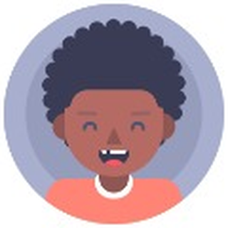
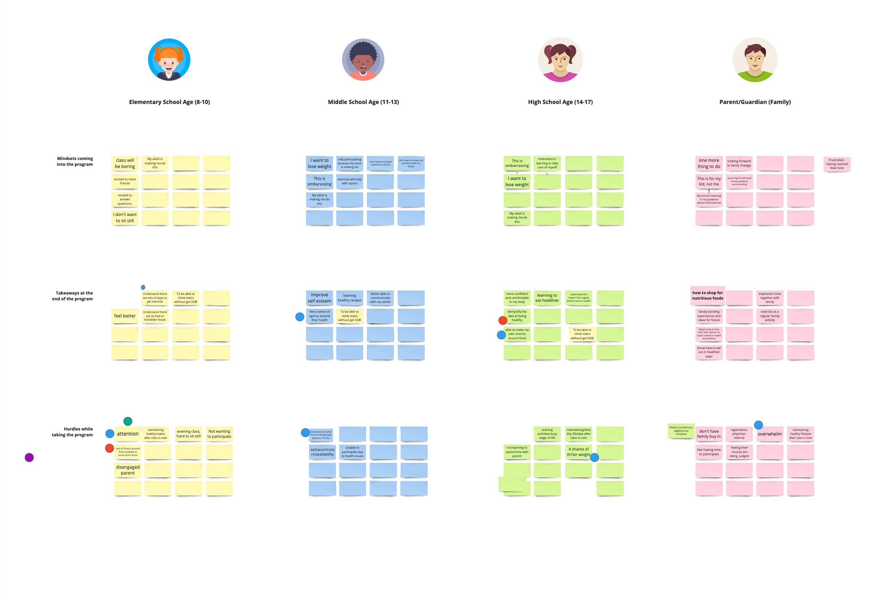
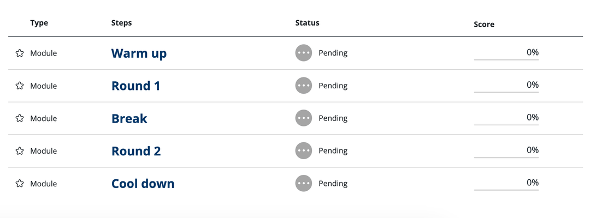
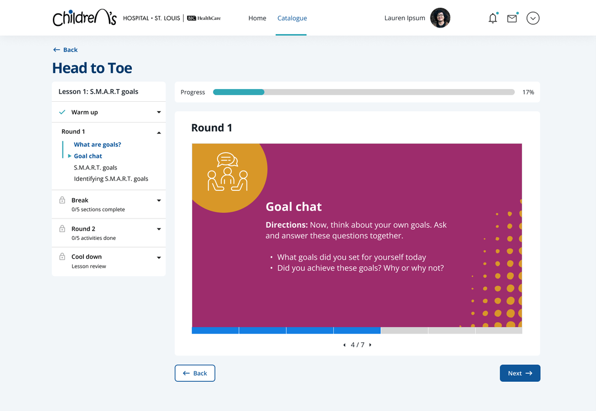
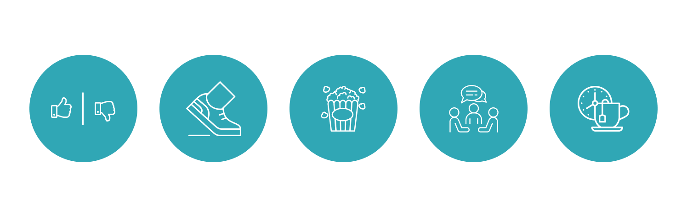

St. Louis Children's Hospital Head to Toe
Designed a fully digital experience to help children, teens and their parents learn to make healthier lifestyle choices.

Background
Head to Toe is an educational program that helps children, teens and their parents learn to make healthier lifestyle choices. The program not only teaches kids about nutrition and exercise, but how to navigate social media and manage their mental health. Families are encouraged to complete the program together and learn from one another.
Traditionally, the program was completed in a physical classroom, where once a week families would meet and learn together. That changed during the pandemic when the program had to move to a virtual environment.
Challenge
Design and develop the Head to Toe program into a fully digital experience where families can take the classes on their own time and at their own pace, while still maintaining the spirit and community of the Head to Toe program.
Product Goals
- Achieve comparable results to in-person course
- Support different types of learning
- Incorporate different types of activities
- Encourage participants to make at least one positive healthy habit
- Engage children & families through a reimagined digital experience
Planning Phase
In collaboration with the content strategist, we began the project by planning and preparing the curriculum outline before we wrote or designed any lessons.
We started with secondary research by researching current practices in the world of online learning. So much had changed in education since the pandemic, so we wanted to understand the current landscape and if there are any new strategies for online learning that we would be able to implement.
We then conducted a workshop with the stakeholders at Head to Toe and distributed a survey to gather insights into users' experiences with online learning. Next came content strategy and voice and tone guidelines, which was led by the content strategist. While they were focusing on content, I spent time becoming familiar with the learning management system, Opigno, which was being used to build the course. We needed to learn how Opigno worked, so we would be able to translate the in person Head to Toe curriculum into this fully digital experience.
Overall, having this planning phase allowed us to set up a solid foundation, so we were able to hit the ground running with curriculum writing and content entry.
Audience Workshop
I conducted a workshop with the main stakeholders of the Head to Toe program to understand the different learning needs of the various age groups.
Elementary School Age (8-10)

Middle School Age (11-13)
High School Age (14-17)
Parent/Guardian (Family)
One of the biggest challenges we faced during this project was creating a curriculum and designing an experience that would be suitable for children 8 to 17 years old. I led an empathizing exercise where we considered these different scenarios for each of the age groups:
- What is their mindset coming into the program?
- What are some of the takeaways they'll have at the end of the program?
- What are possible hurdles they may have while taking the program?
One of the main goals of this workshop was to facilitate conversation, and we wanted to uncover how these stakeholders actually teach these courses. For example, how do they address their class? What types of words or phrases do they use? How do they explain complex topics to kids while keeping it interesting for older teens?
With the help of Miro, the stakeholders were able to spend some time individually brainstorming by jotting down their ideas on sticky notes. We then came together to vote on the ideas that were most important and discussed them as a group. This helped expose common patterns in the way the instructors teach and generated new ideas we could incorporate in the digital course!

Course Structure
Now that we had an understanding of our audience, we were able to dive into defining the curriculum and overall structure of the course. By spending time initially to create lesson outlines, we were able to develop a consistent experience between lessons. This ensured the kids would know what to expect during each lesson, while allowing for flexibility of different activities to keep each lesson exciting and engaging.
By using the insights we uncovered during the Audience Workshop, we determined there were 5 main themes that built upon one another: Accountability, Self-Esteem, Mindfulness, Support, and Healthy for Me. Within each of these units, there would be 3 lessons focusing on nutrition, exercise, and social and emotional health.
- S.M.A.R.T. goals
- Components of exercise
- MyPlate guidelines
- Self-esteem
- Strength training
- Nutrition labels
- Media literacy
- Aerobic exercise
- Mindful eating
- Healthy communication
- Flexibility training
- Eating out
- Strategies for success
- Exercise review
- Nutrition review
Opigno Structure
The next step was translating this structure into Opigno. The learning management system was structured in a nested format with the Head to Toe course at the top. Within the course there would be 15 lessons, which would each contain 5 modules. And within these modules, there would be multiple types of activities.
Content & Design Phase
The content and design phase had a tight timeline with all of the deliverables overlapping each other. Fortunately, the time that was spent planning paid off and we were able to stay on schedule.
The content strategist would first write the curriculum content for 3 lessons, which would then be presented to the client for feedback. Next I would design the lessons in Opigno, and we would have another round of feedback from the client. This cycle occurred for a total of 5 batches to build out the 15 lessons.
I followed 3 main principles: Organization, Consistency, and Variation to guide my work. I wanted to make sure the designs and lessons within Opigno were the best fit for the activities and lessons. I focused on the users and thought about how they would be interacting with the content.
The relationship we developed with the stakeholders at the beginning of the project allowed for us to have a very collaborative and smooth iteration process.
Organization
I started by thinking about the organization of each individual lesson. Each lesson starts with a warm up activity to get everyone in the zone. I then broke the lesson content up into two parts with a break in the middle where the kids can grab a snack or use the restroom. Each lesson ends with a cool down to wrap up the lesson and offers a moment of reflection on what they learned in the lesson.

Consistency
Along with organization, I wanted to maintain consistency throughout the lessons. As you can see in the top left hand corner, there is an icon that represents the type of activity. In this case it's a talking activity where the kids and their family discuss the topic of the activity. By repeating the same types of activities, kids would know what to expect because they've already completed a similar activity.

Variation
I didn't want this course to feel like a school class, so I kept multiple choice and true/false quizzes to a minimum. I wanted to encourage interaction between the kids and their family members, so it was fun and enjoyable for everyone. In order to keep users engaged, I created a variety of activities. These were the 5 main types of activities:
- Check in where the kids would be asked how they're doing and be able to take a moment to reflect on what they're learning
- Movement activity which would encourage kids to get their bodies moving
- Bio break where kids were able to grab a snack or use the bathroom
- Popcorn activity where kids would read a few sentences, and then popcorn to their family member to continue reading
- Talking activity where the kids and their family discuss the topic of the activity

Test
I created a sample lesson within Opigno that would mimic a Head to Toe lesson, but with a focus on specific activities that we wanted to test with users. St. Louis Children's Hospital helped us recruit participants, and we requested that both the child and parent be present for the testing, so we could reflect the real experience as closely as possible.
We were able to conduct 5 usability tests over Zoom where participants were instructed to complete the sample lesson, and were asked questions along the way. These user tests were a lot of fun to moderate and we gained useful insights into how these families would complete the activities.